MLT Week 3: K-Means Clustering Notes
Flow: Similar points ko group karna → centroid aur WCSS → Lloyd's assign–update cycle → convergence → cluster geometry → K-Means++ initialization → distance variants → silhouette.
1. Clustering, centroid aur objective
1.1 Clustering kya karti hai?
Definition: Bina target labels ke similar data points ko groups mein divide karna clustering hai; yeh unsupervised learning hai.
Real life: Customers ko spending aur visit frequency ke basis par group karo. Pehle se “regular customer” label nahi diya; groups features se discover honge.
K-Means compact, roughly spherical groups aur comparable scales par naturally useful hai. Curved moons/rings ya strongly unequal densities ko natural groups ki tarah recover karna difficult ho sakta hai, because assignment nearest-centroid boundaries use karti hai.
K-Means mein $K$ groups pehle choose karte hain. Har point exactly ek cluster mein jaata hai: hard assignment. Centroid us cluster ka representative average hai. Goal: points apne centroid ke paas hon.
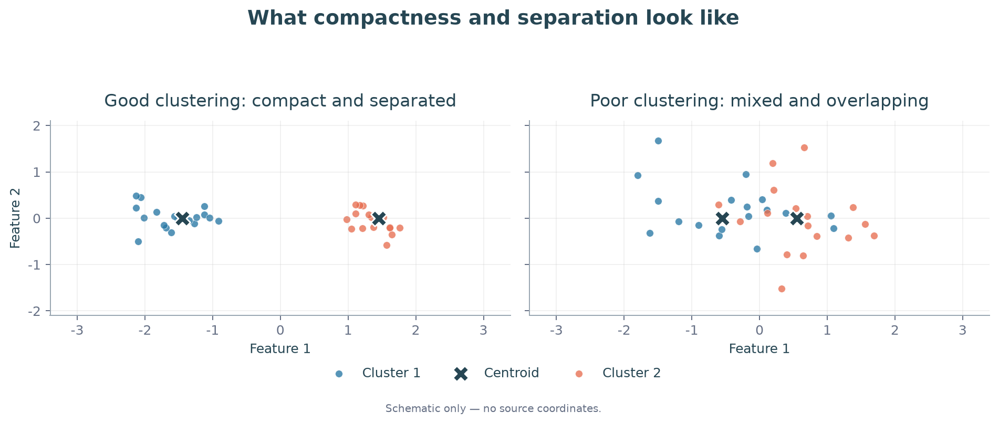
1.2 Notation aur centroid
| Symbol | Meaning |
|---|---|
| $x_i\in\mathbb R^d$ | Point $i$ ke $d$ features |
| $n,K$ | Total points, chosen number of clusters |
| $z_i\in\{1,\ldots,K\}$ | Point $i$ ka cluster label |
| $C_k=\{x_i:z_i=k\}$ | Cluster $k$ ke points |
| $\mu_k$ | Cluster $k$ ka centroid |
$$\boxed{\mu_k=\frac1{|C_k|}\sum_{x_i\in C_k}x_i =\frac{\sum_i x_i\mathbf1(z_i=k)}{\sum_i\mathbf1(z_i=k)}}.$$
Indicator $\mathbf1(z_i=k)$ matching point ke liye 1, baaki ke liye 0. 2D mein x aur y ka average separately lo. Centroid data point hona zaroori nahi: $\{0,2\}$ ka mean 1 hai.
Assignment vector ka order dataset ke order se match karta hai. Labels swap karne se grouping nahi badalti: $(1,1,2,2)$ aur $(2,2,1,1)$ same partition describe karte hain.
Har point ke $K$ possible labels hon toh $K^n$ assignment vectors hain. Yeh labelled assignments allowing empty clusters ka count hai; exactly $K$ non-empty, unlabelled groups ka count nahi.
Q26 — Direct centroid update
Question:
The centroid update in K-Means is:
$$ \mu_k= \frac{\sum_i x_i\mathbf1(z_i=k)} {\sum_i\mathbf1(z_i=k)} $$
After the first iteration, suppose:
$$ C_1=\{(2,2),(3,3),(4,4)\} $$
Which is the updated centroid $\mu_1$?
Solution:
Oct 2023 Quiz 1.
Step 1: Cluster mein 3 points hain. Coordinate sums: $2+3+4=9$ dono axes par.
Step 2: Har sum ko 3 se divide karo:
$$\boxed{\mu_1=(9/3,9/3)=(3,3)}.$$
Yahi coordinate-wise averaging har update question mein use hogi.
1.3 WCSS: Cluster compactness ka measure
Definition: Within-cluster sum of squares (WCSS) har point se uske assigned centroid tak squared distance ka total hai.
$$\boxed{J(z,\mu)=\sum_{i=1}^n\|x_i-\mu_{z_i}\|_2^2 =\sum_{k=1}^K\sum_{x_i\in C_k}\|x_i-\mu_k\|_2^2}.$$
Small WCSS means points apne centers ke paas hain. $J\geq0$; zero tab jab har point apne assigned center se coincide kare. Convergence ka matlab $J=0$ nahi hai.
Euclidean distance $\sqrt{(x-a)^2+(y-b)^2}$ aur squared distance $(x-a)^2+(y-b)^2$ se nearest center same aata hai, because square root increasing hai. Lekin WCSS mein squares hi sum honge. Distances 2 aur 3 hon toh WCSS $4+9=13$, na ki 5.
Properties aur counterexamples:
- Fixed assignments ke liye arithmetic mean squared error minimize karta hai. $\{0,2\}$ par center 1 ka error 2; center 0 ka error 4.
- Outliers mean ko pull karte hain: $\{0,1,2\}$ ka mean 1; 100 add karne par 25.75. Squared penalty extreme distances ko aur weight deti hai.
- Feature scale matters: income rupees mein aur age years mein ho toh income distance dominate kar sakti hai. Meaningful scaling choose karo; scaling ke baad clusters change ho sakte hain.
- Same positive factor $c$ se sab coordinates aur centers scale karo toh assignments same, WCSS $c^2J$. Ek feature alone rescale karna different baat hai.
2. Lloyd's algorithm: Assign → update → repeat
2.1 Ek iteration mein kya badalta hai?
Real life: Pehle customer ko nearest branch do; phir har branch ko uske customers ke average location par move karo. Updated branches se assignment dubara check karo.
- $K$ choose karo aur centers initialize karo.
- Assignment: centers fixed rakhkar $z_i\leftarrow\arg\min_k\|x_i-\mu_k\|^2$.
- Update: assignments fixed rakhkar cluster-wise means nikalo.
- Assignments stable hone tak repeat karo.
Initial assignments given hon toh pehle unse centers calculate karo. Initial centers given hon toh pehle nearest-center assignment.
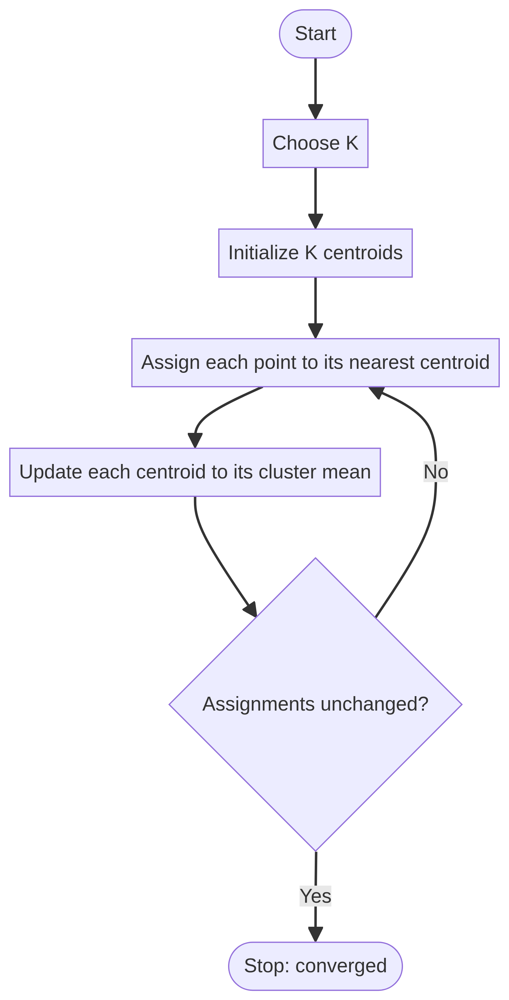
Tie par stated rule follow karo; otherwise fixed deterministic convention state karo. Empty cluster ka mean undefined hai; uske liye explicit handling chahiye, zero se divide mat karo.
Dec 2024 End Term Q14 ka step-order isi cycle se: choose K → random centers → assign → recompute → reassign, supplied operation numbers 5,3,1,4,2.
Q1 — Complete iteration and convergence
Question:
The dataset contains the following points:
$$ \begin{aligned} &(-2,2),(-2,-2),(0,0),(2,2),(2,-2),\\ &(8,2),(8,-2),(9,1),(9,-1) \end{aligned} $$
Given $K=2$ and initial centroids:
$$ \mu_1^{(0)}=(0,0),\qquad \mu_2^{(0)}=(6,0) $$
Find the cluster means after convergence.
Solution:
Jan 2024 Quiz 1.
Step 1 — Nearest center: $d_1^2=x^2+y^2$, $d_2^2=(x-6)^2+y^2$.
| Point | $d_1^2$ | $d_2^2$ | Cluster |
|---|---|---|---|
| $(-2,2)$ | 8 | 68 | 1 |
| $(-2,-2)$ | 8 | 68 | 1 |
| $(0,0)$ | 0 | 36 | 1 |
| $(2,2)$ | 8 | 20 | 1 |
| $(2,-2)$ | 8 | 20 | 1 |
| $(8,2)$ | 68 | 8 | 2 |
| $(8,-2)$ | 68 | 8 | 2 |
| $(9,1)$ | 82 | 10 | 2 |
| $(9,-1)$ | 82 | 10 | 2 |
Step 2 — Means: First five points ka coordinate sum $(0,0)$ hai, so $\mu_1=(0,0)$. Last four ka sum $(34,0)$, so $\mu_2=(8.5,0)$.
Step 3 — Stability: Updated centers ke beech midpoint x-coordinate $4.25$ hai. Left group ke sab x-coordinates $\leq2$, right group ke $\geq8$ hain. Koi point boundary cross nahi karta.
$$\boxed{\mu_1=(0,0),\quad\mu_2=(8.5,0)}.$$
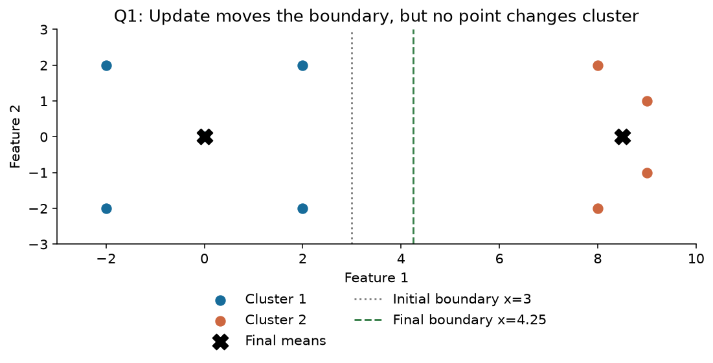
Same assign–average–check pattern: May 2024 Quiz 1 Q3, Jul 2023 Quiz 1 Q25, Dec 2023 End Term Q44. $K=3$ mein bas three distances compare honge; method same hai.
Q1(ii) — New point add hone par
Question:
A new point $(7,0)$ is added. Find the sum of the x-coordinates of the two final cluster means.
Accepted answer range in the notes: 8.18–8.22.
Solution:
Step 1: Existing final centers se $(7,0)$ ki squared distances 49 aur 2.25 hain. Point cluster 2 mein jaayega.
Step 2: Purane cluster 2 ka count 4, sum $(34,0)$ tha. New sum $(41,0)$, count 5:
$$\mu_2'=\frac{(34,0)+(7,0)}5=(8.2,0).$$
Step 3: New boundary $x=4.1$ hai; saare assignments stable hain. First mean $(0,0)$ hi hai.
$$\boxed{\text{Required sum}=0+8.2=8.20}.$$
Useful formula: old cluster size $m$ ho toh $\mu'=(m\mu+x_{\rm new})/(m+1)$, provided baaki membership unchanged rahe. Adding point ke baad recheck zaroor karo. Related changed-data question: Oct 2025 Quiz 1 Q32; uski full figure supplied notes/PDF mein missing hai.
Q17 — First update; Q45 — Final objective
Question:
Given:
$$ x_1=1,\quad x_2=4,\quad x_3=7,\quad x_4=8 $$
with:
$$ K=2 $$
Initial centroids:
$$ \mu_1^{(0)}=1,\qquad\mu_2^{(0)}=4 $$
Find the centroids after the first iteration of Lloyd's algorithm.
Solution:
Q17 ke term labels existing notes mein Dec 2025 / Sep 2026 hain.
Step 1: Centers 1 aur 4 ka midpoint 2.5. So $C_1=\{1\}$, $C_2=\{4,7,8\}$.
Step 2: Means:
$$\boxed{\mu_1=1,\quad\mu_2=(4+7+8)/3=19/3\approx6.33}.$$
Step 3: New midpoint $11/3\approx3.67$. 4,7,8 ab bhi cluster 2 mein hain, so stable. Har problem mein first update final nahi hota; yahan recheck ne confirm kiya.
Question: Using the same dataset and initial centroids, calculate the final objective.
Dec 2025 End Term · Q45.
Solution: Final means se squared deviations add karo:
$$J=0+(-7/3)^2+(2/3)^2+(5/3)^2 =\frac{49+4+25}{9}=\boxed{26/3\approx8.67}.$$
Same dataset ka solution repeat nahi kiya; changed subpart mein sirf required WCSS nikala.
Q20 — Missing cluster membership
Question:
Given:
$$ \begin{aligned} x_1&=(0,2), &x_2&=(2,0),\\ x_3&=(0,0), &x_4&=(0,-2),\\ x_5&=(-2,0),&x_6&=(0,1),\\ x_7&=(0,-1) \end{aligned} $$
The assignment vector is:
$$ z=(3,1,?,2,1,3,2) $$
Which cluster should be assigned to $x_3$?
Options: 1, 2, or 3.
Solution:
Oct 2022 Quiz 1.
Step 1: Known memberships se $C_1=\{(2,0),(-2,0)\}$, $C_2=\{(0,-2),(0,-1)\}$, $C_3=\{(0,2),(0,1)\}$.
Step 2: Inke means $(0,0),(0,-1.5),(0,1.5)$ hain.
Step 3: Missing point $x_3=(0,0)$ se squared distances $0,2.25,2.25$. Minimum first cluster par:
$$\boxed{z_3=1}.$$
Yeh known groups se centers banakar missing point assign karne ki interpretation hai. Sirf arbitrary assignment vector ke blank se label mathematically force nahi hota; nearest-center criterion use ho raha hai.
Reassignment ke same pattern wale questions: Apr 2025 End Term Q15, Oct 2023 Quiz 1 Q27. Har baar updated means se distance compare karo.
Q35 — Initial assignments given hon toh
Question:
For the points:
$$ x_1=(0,0),\quad x_2=(3,0) $$
$$ x_3=(4,1),\quad x_4=(1,1) $$
Find the final assignment vectors for:
- $z^{(0)}=(1,1,2,2)$
- $z^{(0)}=(1,2,2,1)$
Solution:
Mar 2026 Quiz 1.
Case 1, Step 1: $(1,1,2,2)$ se means $(1.5,0)$ aur $(2.5,1)$ aate hain.
Step 2: In means se distances:
| Point | To center 1, squared | To center 2, squared | New label |
|---|---|---|---|
| $(0,0)$ | 2.25 | 7.25 | 1 |
| $(3,0)$ | 2.25 | 1.25 | 2 |
| $(4,1)$ | 7.25 | 2.25 | 2 |
| $(1,1)$ | 1.25 | 2.25 | 1 |
Step 3: New means $(0.5,0.5)$ aur $(3.5,0.5)$ hain. Boundary $x=2$; labels $(1,2,2,1)$ stable hain.
Case 2: Initial vector already $(1,2,2,1)$ hai. Means directly wahi milte hain aur labels change nahi hote.
$$\boxed{\text{Dono cases: }z^{(\infty)}=(1,2,2,1)}.$$
Different initialization same result de sakti hai, always de yeh guarantee nahi. Related assignment-initialization question: Oct 2022 Quiz 1 Q19.
2.2 Iteration counting ka trap
Jul 2023 Quiz 1 Q23 mein points $(1,1),(2,1),(4,3),(5,4)$ aur initial centers $(0,0),(4,4)$ hain. Initial squared-distance pairs $(2,18),(5,13),(25,1),(41,1)$ se groups first two / last two bante hain. Means $(1.5,1),(4.5,3.5)$.
Recheck pairs $(0.25,18.5),(0.25,12.5),(10.25,0.5),(18.25,0.5)$ same groups dete hain. Thus one effective update, but source 2 iterations count karta hai because second stability check bhi count hua. Numerical result aur counting convention ko separate samjho.
3. Objective stages, convergence aur choosing K
3.1 Old/new center ka superscript kyun important hai?
Definition: Lloyd's algorithm alternating minimization hai: ek time par assignments ya centers optimize hote hain, dono ek saath nahi.
$$J_A=J(z^{(t)},\mu^{(t)}),\quad J_B=J(z^{(t+1)},\mu^{(t)}),\quad J_C=J(z^{(t+1)},\mu^{(t+1)}).$$
$$\boxed{J_C\leq J_B\leq J_A}.$$
Assignment mein nearest center choose karne se cost nahi badhti; update mein mean best squared-error center hai. Already stable ho toh equality possible: strict decrease always false hai.
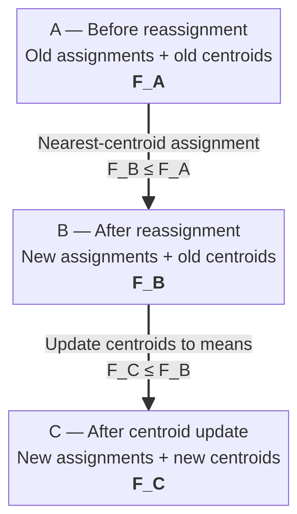
Q36 — Assignment ke baad, update se pehle
Question:
For:
$$ x_1=0,\quad x_2=2,\quad x_3=6,\quad x_4=8 $$
the current centroids are:
$$ \mu_1^{(t)}=0,\qquad \mu_2^{(t)}=10 $$
After the assignment step, compute:
$$ \sum_{i=1}^{4} \left\|x_i-\mu_{z_i^{(t+1)}}^{(t)}\right\|^2 $$
Solution:
Jul 2026 Quiz 1.
Step 1: Old centers 0,10 ka midpoint 5. New groups $\{0,2\}$ aur $\{6,8\}$.
Step 2: Asked expression mein $\mu^{(t)}$ hai: centers 0,10 hi use karo.
$$\boxed{J_B=0^2+2^2+(6-10)^2+(8-10)^2=24}.$$
Stage comparison: Update karte toh means 1,7 aur $J_C=1+1+1+1=4$. Dono answers different stages ke hain; is question ka answer 24 hai.
Q6 — Three objectives ki inequality
Question:
Three objective expressions are given:
Expression (1) — Before reassignment
$$ (1)=\sum_i\|x_i-\mu_{z_i^{(t)}}^{(t)}\|^2 $$
Expression (2) — After reassignment with old centroids
$$ (2)=\sum_i\|x_i-\mu_{z_i^{(t+1)}}^{(t)}\|^2 $$
Expression (3) — After reassignment and update
$$ (3)=\sum_i\|x_i-\mu_{z_i^{(t+1)}}^{(t+1)}\|^2 $$
Find the correct inequality relating these three quantities.
Solution:
Jan 2025 Quiz 1.
Step 1: Assignment minimize karta hai, so $(2)\leq(1)$.
Step 2: New groups ke means use karne se $(3)\leq(2)$.
Step 3: Combine:
$$\boxed{(3)\leq(2)\leq(1)}.$$
Strict $<$ tabhi jab dono steps actually improve karein. Already optimal groups/means counterexample hain: teeno expressions equal ho sakte hain.
3.2 Convergence kya guarantee karti hai?
Finite data, consistent deterministic tie handling aur suitable empty-cluster handling ke standard setting mein Lloyd iterations terminate at a stable configuration. Objective lower-bounded by zero hai aur non-increasing hai; finite-assignment structure termination argument ko complete karta hai. Sirf decreasing bounded sequence se finite termination prove nahi hota: $1,1/2,1/3,\ldots$ counterexample hai.
Stable configuration ko usually local optimum kehte hain; precise idea: current assign/update steps aur improve nahi karte. Global optimum guaranteed nahi. Multiple restarts karo aur same dataset, scaling, $K$ par lowest final WCSS choose karo.
Poor initialization worse result ya slower convergence laa sakti hai; “always more iterations” guaranteed nahi. May 2025 Quiz 1 Q11 isi distinction ke saath initialization aur $K$ sensitivity test karta hai. Feb 2024 Quiz 1 Q29 bhi local minima/practical initialization par hai.
Jul 2026 Quiz 1 Q37 ka “cannot revisit a partition” statement pre-termination convergence argument ke context mein hai. Converged state ko dobara check karoge toh same partition naturally repeat hogi.
Q10 — Objective plateau
Question:
The following table shows objective values across iterations.
| Iteration | Objective $F$ |
|---|---|
| 1 | 800 |
| 2 | 500 |
| 3 | 400 |
| 4 | 400 |
| 5 | 400 |
At which iteration has the objective reached its final stable value?
Solution:
May 2025 Quiz 1.
Step 1: Values $800\to500\to400\to400\to400$ dekho.
Step 2: Final plateau 400 pehli baar iteration 3 mein milta hai; iteration 4 next equal value se confirm karta hai.
$$\boxed{\text{Stable objective starts at iteration 3}}.$$
Question objective ki stability poochhta hai. Assignment-level convergence ke liye labels bhi inspect karna relevant hai.
Q30 — Convergence and outliers
Question:
A. Lloyd's algorithm always converges.
B. It may fail to converge for one initialization while converging for another.
C. It is sensitive to outliers.
D. Its solution is always globally optimal.
Solution:
Oct 2025 Quiz 1.
A: Standard assumptions ke under true.
B: Unhi assumptions mein false; initialization convergence path/result badal sakti hai, convergence guarantee ko aise remove nahi karti.
C: True; mean aur squared error outliers se sensitive hain.
D: False; global optimum guaranteed nahi.
$$\boxed{A,C}.$$
3.3 K badhane se WCSS
Real life: Ek city ko 1 service center do versus har customer ko individual center. More centers se distance kam karna easy hai, lekin groups ka practical meaning bhi chahiye.
Globally minimized WCSS obeys $J^*_{K+1}\leq J^*_K$. Extra cluster se existing group split kar sakte hain; best achievable error badhne ki need nahi. Arbitrary different Lloyd runs ke final errors compare karte waqt local minima ka effect aa sakta hai.
$K=n$ par har point ka own center ho sakta hai, WCSS 0. Isliye sirf minimum training WCSS se best K choose mat karo. Elbow plot mein reduction slow hone ka region useful heuristic hai; silhouette separation bhi check karti hai.
Q38 — Minimum possible WCSS
Question:
A dataset contains 1000 points. Which value of $K$ is most likely to yield the minimum K-Means objective?
A. $K=1$
B. $K=10$
C. $K=100$
D. $K=1000$
Solution:
Jul 2026 Quiz 1.
Step 1: 1000 points aur 1000 centers allow hain.
Step 2: Har point par ek center rakho. Har distance zero, total $J=0$.
Step 3: WCSS negative nahi ho sakta, so yeh global minimum hai.
$$\boxed{D:\ K=1000}.$$
Yeh objective-minimum ka answer hai; meaningful grouping ke liye 1000 clusters zaroori nahi.
4. Cluster geometry: Boundary aur convexity
4.1 Nearest-center boundary
Definition: Do centers se equal distance wale points decision boundary par hain. 2D Euclidean K-Means mein straight line; higher dimensions mein hyperplane.
$$\boxed{2x^T(\mu_2-\mu_1)=\|\mu_2\|^2-\|\mu_1\|^2}.$$
Boundary centers ko join karne wale segment ki perpendicular bisector hai. Example: centers $(1,2),(5,2)$ ka midpoint $(3,2)$, boundary $x_1=3$.
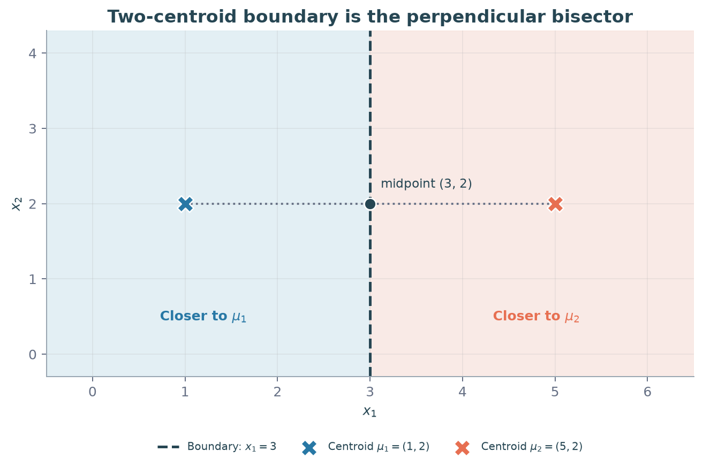
Sep 2024 End Term Q13 mein recorded boundary $2x_1+x_2=0$ hai. Yeh valid linear form hai, lekin exact centers/figure available nahi; sirf linear hone se isi specific equation ko correct option prove nahi kar sakte.
4.2 Voronoi cell aur convex hull
Definition: Ek center ke nearest points ka region uska Voronoi cell hai. Cell half-spaces ka intersection hai, so convex.
Convex ka simple meaning: region ke do points ko straight segment se join karo; poora segment region ke andar rehta hai. Finite observed points khud filled region nahi hain; guarantee nearest-center region ke baare mein hai.
$$A,B\in V_k\Rightarrow\lambda A+(1-\lambda)B\in V_k,\quad0\leq\lambda\leq1.$$
Boundary ties par consistent center-priority rule use karo; arbitrary point-dependent tie labels convexity guarantee ko disrupt kar sakte hain.
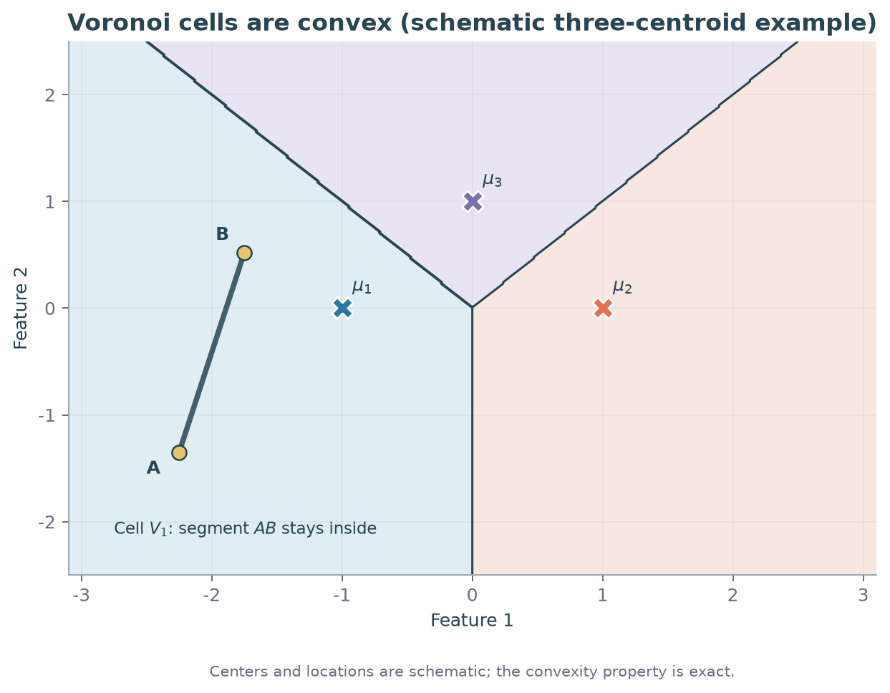
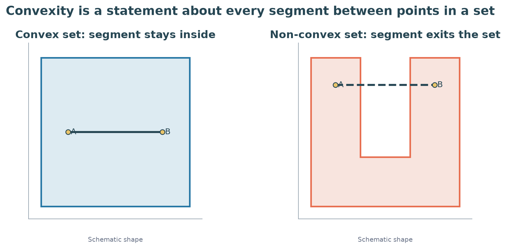
Counterexample: Ring-shaped region ka opposite ends join karne wala segment empty middle se guzarta hai, so region non-convex. Standard Euclidean nearest-center cell aisa ring nahi ho sakta. $K=2$ mein do distinct centers ke regions ko ek straight line separate karti hai.
Oct 2022 Quiz 1 Q24 impossible-shape question isi property par based hai. Supplied MD aur PDF mein option figures absent hain; recorded A,B,D ko option-wise verify nahi kiya ja sakta.
Q43 — Square ke corners se guaranteed membership
Question:
The following points belong to the same K-Means cluster:
$$ (1,1),\quad(-1,-1),\quad(1,-1),\quad(-1,1) $$
Which of the following points must also lie in that cluster?
A. $(0,0)$
B. $(2,2)$
C. $(-0.5,0.5)$
D. $(0.75,0.9)$
Solution:
Sep 2023 End Term.
Step 1: Four corners ka convex hull square $-1\leq x\leq1$, $-1\leq y\leq1$ hai.
Step 2: Har option check karo:
| Option | Position | Guaranteed? |
|---|---|---|
| A $(0,0)$ | Square ke andar | Yes |
| B $(2,2)$ | Square ke bahar | No |
| C $(-0.5,0.5)$ | Square ke andar | Yes |
| D $(0.75,0.9)$ | Square ke andar | Yes |
$$\boxed{A,C,D}.$$
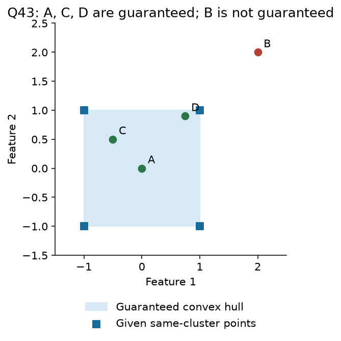
B not guaranteed ka matlab B definitely kisi aur cluster mein hai nahi. Actual cell square se bada bhi ho sakta hai.
Same convexity pattern: Jan 2025 Quiz 1 Q7 mein $(0,1),(1,1)$ ke between $(0.2,1)$ guaranteed; Sep 2026 End Term Q18 mein $(2,2),(2,-2)$ ka midpoint $(2,0)$ guaranteed. Alag full solution ki need nahi; segment rule same hai.
Q12 — Perfect negative correlation
Question:
A two-feature dataset has perfect negative correlation:
$$ \operatorname{corr}(X_1,X_2)=-1 $$
K-Means clustering is applied with:
$$ K=3 $$
What can be said about the positions of the cluster centers minimizing WCSS?
Solution:
Apr 2024 End Term.
Step 1: Nonzero feature variances ke saath correlation $-1$ ka matlab data line $x_2=a+bx_1$, $b<0$ par hain.
Step 2: Kisi non-empty group ka average bhi relation satisfy karega: $\bar x_2=a+b\bar x_1$.
Step 3: Har centroid group mean hai, so:
$$\boxed{\text{All three centers lie on the same negatively sloped line}}.$$
Slope necessarily $-1$ nahi; correlation $-1$ perfect decreasing linear relation batata hai, units slope change kar sakte hain.
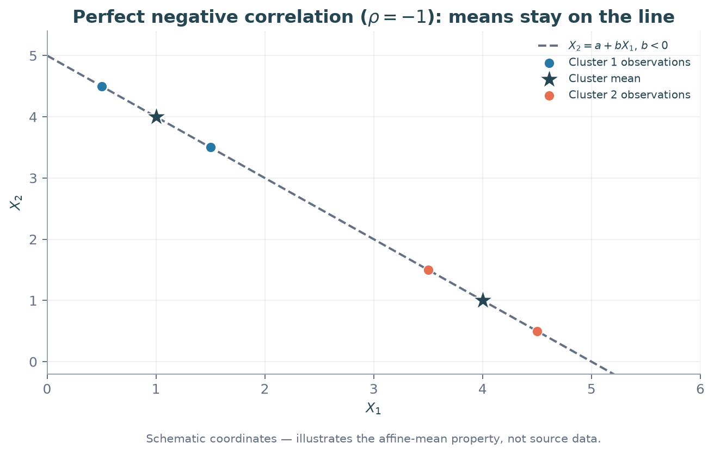
5. K-Means++: Better starting centers
5.1 Random start se distance-weighted sampling tak
Definition: K-Means++ Lloyd's algorithm ke starting centers choose karne ka method hai. Baad ka assign–update loop same rehta hai.
Real life: First service center randomly choose ho gaya. Ab already covered area ke paas ek aur center kholne se better, door ke regions ko higher chance do.
- First center uniformly data points se: probability $1/n$.
- Har point ke liye nearest selected center ki distance: $$D_i^2=\min_{c\in S}\|x_i-c\|_2^2.$$
- Next center sample karo: $$\boxed{p_i=D_i^2/\sum_jD_j^2}.$$
- $K$ centers hone tak scores recompute karke repeat karo.
Selected center ka score zero; denominator positive ho toh probability zero. Sab scores zero ho jaayein toh formula $0/0$ hai: all distinct locations covered; explicit fallback/termination chahiye.
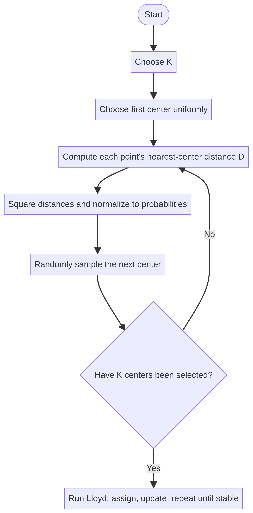
Properties: Farther point ka higher probability, guaranteed selection nahi. Centers spread karne mein help milti hai (May 2025 Quiz 1 Q9); global optimum, fixed iteration count aur automatically chosen $K$ guaranteed nahi. Uniform first choice aur weighted later choices ko mix mat karo.
Q2 — Second center probability
Question:
In K-Means++, $x_7$ has already been selected as the first centroid.
The Euclidean distances from the remaining points to the selected centroid are:
| Point | Euclidean distance |
|---|---|
| $x_1$ | $1$ |
| $x_2$ | $2$ |
| $x_3$ | $\sqrt2$ |
| $x_4$ | $\sqrt3$ |
| $x_5$ | $\sqrt5$ |
| $x_6$ | $1$ |
Find the probability that $x_2$ is selected as the second centroid.
Solution:
May 2024 Quiz 1.
Step 1: Given distances square karo: scores $1,4,2,3,5,1$.
Step 2: Total $S=1+4+2+3+5+1=16$.
Step 3: $x_2$ ka score 4, so:
$$\boxed{P(x_2\mid\text{first}=x_7)=4/16=0.25}.$$
First center already selected hai, isliye extra $1/7$ multiply nahi karna.
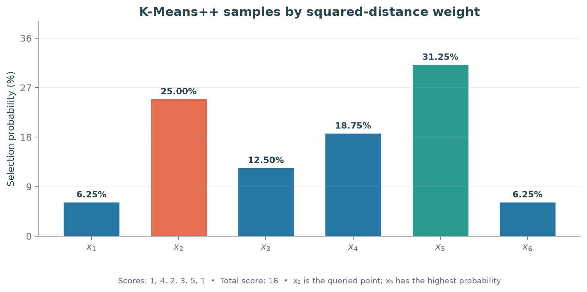
Q5 — Second center ke baad scores update
Question:
Consider seven two-dimensional points:
$$ \begin{aligned} X=\{&(0,1),(1,0),(1,2),(2,1),\\ &(2,3),(2,4),(3,2)\} \end{aligned} $$
The first centroid is:
$$ \mu_1=(2,1) $$
The question asks:
- If the second center is selected as the point with the highest squared-distance score, which point is selected?
- After choosing that center, which remaining point has the lowest probability of being selected as the third centroid?
Important: Part (1) explicitly requests the highest-scoring point, rather than a random sample.
Solution:
Existing notes mein term labels Sep 2024 / Jan 2025 Quiz 1 hain.
Step 1: First center $(2,1)$ se squared distances:
| Point | Score |
|---|---|
| $(0,1)$ | 4 |
| $(1,0)$ | 2 |
| $(1,2)$ | 2 |
| $(2,1)$ | 0 |
| $(2,3)$ | 4 |
| $(2,4)$ | 9 |
| $(3,2)$ | 2 |
Part (1) explicitly highest-scoring point poochhta hai: $\boxed{(2,4)}$. Standard random sampling mein yeh sirf most likely hota, guaranteed nahi.
Step 2: Selected centers $(2,1),(2,4)$ ke liye nearest-distance scores nikalo:
| Remaining point | To first, squared | To second, squared | Minimum |
|---|---|---|---|
| $(0,1)$ | 4 | 13 | 4 |
| $(1,0)$ | 2 | 17 | 2 |
| $(1,2)$ | 2 | 5 | 2 |
| $(2,3)$ | 4 | 1 | 1 |
| $(3,2)$ | 2 | 5 | 2 |
Step 3: New total $4+2+2+1+2=11$. Remaining points mein least score 1:
$$\boxed{\text{Least likely: }(2,3),\quad p=1/11\approx0.0909}.$$
Mar 2026 Quiz 1 Q34 bhi third-center minimum-distance rule test karta hai. Uske missing remaining points ke bina recorded probability 0.5 verify nahi hoti; method yahan complete data par solve ho gaya.
Q31 — Probabilities aur assignment ties
Question:
Given:
$$ X=\{(0,0),(0,2),(2,0),(2,2)\} $$
K-Means++ uses:
$$ K=2 $$
The first center is:
$$ \mu_1=(0,0) $$
Which statements are correct?
A. Points $(0,2),(2,0),(2,2)$ have equal probability of becoming the second center.
B. The probability of selecting $(2,2)$ is twice the probability of selecting $(0,2)$.
C. If $(2,2)$ is selected, the algorithm always converges in one iteration.
D. The tie-breaking rule affects the final centers.
Solution:
Oct 2025 Quiz 1.
Step 1: $(0,0)$ se other corners ke squared scores $4,4,8$; total 16. Probabilities $1/4,1/4,1/2$. So A false, B true.
Step 2: Second center $(2,2)$ choose ho toh $(0,2)$ aur $(2,0)$ dono centers se squared distance 4 par hain: assignment tie.
Step 3: Dono tied points cluster 1 ko do toh updated means $(2/3,2/3),(2,2)$. Apne first center se first three points ki costs $8/9,20/9,20/9$, second se $8,4,4$; fourth point second center par hai. Groups stable.
Tie ko split karo toh vertical ya horizontal groups mil sakte hain: means $(0,1),(2,1)$ ya $(1,0),(1,2)$; ye bhi stable. So D true: tie rule final centers affect kar sakta hai.
C ka convention: First assignment/update se stable means mil jaate hain, next check confirm karta hai. Source isi sense mein C true maanta hai. Thus recorded answer B,C,D; “one iteration” ko check-counting convention ke saath interpret karo.
Q8 — Distance versus squared-distance weights
Question:
Five points:
$$ X=\{(2,5),(2,4),(0,3),(1,1),(1,0)\} $$
The first center is:
$$ \mu_1=(1,1) $$
Determine which remaining point has the least chance of becoming the next center, and its probability using the distance-based rule specified in the question.
Solution:
Existing notes mein Jan 2025 / May 2025 labels conflict karte hain.
Step 1: $(1,1)$ se candidates ki squared distances:
| Point | Squared distance | Distance |
|---|---|---|
| $(2,5)$ | 17 | $\sqrt{17}$ |
| $(2,4)$ | 10 | $\sqrt{10}$ |
| $(0,3)$ | 5 | $\sqrt5$ |
| $(1,0)$ | 1 | 1 |
Step 2: Dono rules mein least positive score $(1,0)$ ka hai.
Step 3: Explicit unsquared-distance sampling ho toh
$$p=\frac1{\sqrt{17}+\sqrt{10}+\sqrt5+1}\approx\boxed{0.0950}.$$
Standard K-Means++ ho toh
$$p=\frac1{17+10+5+1}=\boxed{1/33\approx0.0303}.$$
Available notes unsquared rule se approximately 0.10 report karte hain. Question ki exact weight definition follow karo; dono answers interchangeable nahi hain.
Q16 — Farthest point choose karna optimal hai?
Question:
For:
$$ K=2 $$
consider the following initialization:
- Choose the first center uniformly at random.
- Choose the second center as the point farthest from the first.
Does this always produce the optimal K-Means objective?
The available notes list these choices:
A. Always optimal.
B. May be optimal or worse.
C. Does not converge.
D. Always unique.
Solution:
Existing notes mein Aug 2025 / Dec 2025 End Term labels hain.
Step 1: Method starting centers choose karta hai; saare possible final partitions compare nahi karta.
Step 2: Any resulting WCSS global minimum se below nahi ho sakti:
$$J_{\rm result}\geq J^*.$$
Step 3: Equality possible hai, worse local solution bhi possible. So $\boxed{B:\ \text{May be optimal or worse}}$.
Farthest-point deterministic choice aur distance-weighted random K-Means++ same algorithm nahi.
5.2 Ordered aur unordered center probabilities
Conditional probability mein first center already known hai. Joint ordered probability mein first selection ka chance bhi multiply karo:
$$\boxed{P(a\text{ first},b\text{ second})=\frac1n \frac{\|x_b-x_a\|^2}{\sum_j\|x_j-x_a\|^2}}.$$
Unordered pair $\{a,b\}$ ke liye $P(a,b)+P(b,a)$; second direction ka denominator change ho sakta hai, blindly double mat karo.
Example: Points $\{0,1,3\}$, ordered pair $(0,3)$: first probability $1/3$, conditional second $9/(1+9)$, joint $3/10$. Reverse $(3,0)$: $(1/3)\cdot9/(9+4)=3/13$. Unordered pair probability $3/10+3/13=69/130$.
Oct 2022 Quiz 1 Q22 isi ordered-pair skill par hai. Uske six-point coordinates/figure MD aur PDF mein missing hain; listed 0.033,0.017,0.067 ko reconstruct nahi kiya ja sakta. Formula ke complete numerical example se method samjho.
6. Distance variants: Question ka metric follow karo
6.1 Euclidean versus Manhattan
Definition: Euclidean straight-line distance; Manhattan axis-wise absolute movement ka total. City blocks mein horizontal + vertical travel Manhattan intuition hai.
$$d_2(x,y)=\sqrt{\sum_j(x_j-y_j)^2},\qquad \boxed{d_1(x,y)=\sum_j|x_j-y_j|}.$$
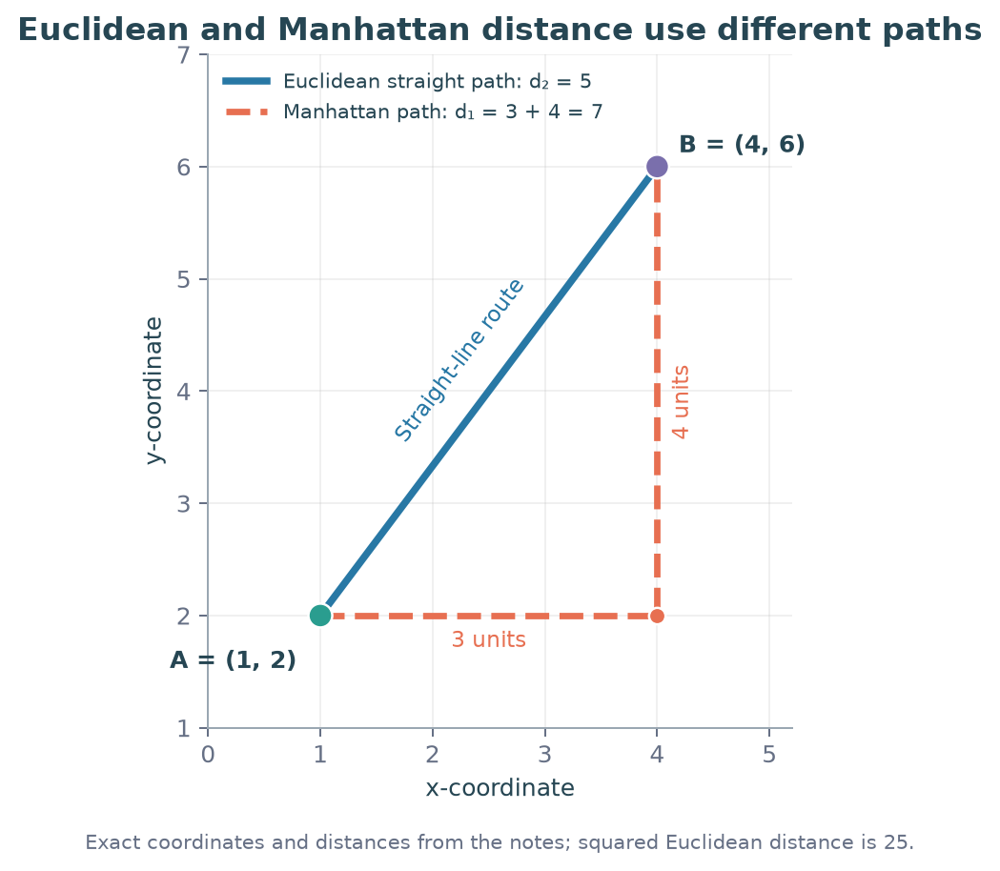
Squared-Euclidean objective ka optimizer mean hai. Unsquared Manhattan objective ke liye coordinate-wise median minimizes cost. Example $\{0,0,9\}$: median 0 ka absolute cost 9; mean 3 ka cost 12. Isliye metric/objective badalne par mean-update guarantee automatically transfer mat karo.
Q28 — Same question mein different metrics
Question:
Consider six data points:
$$ X=\{(2,2),(3,3),(4,4),(10,10),(12,12),(13,13)\} $$
The first center selected is:
$$ \mu_1=(2,2) $$
Answer:
- Which point has the highest probability of becoming the second center when Manhattan distance is used?
- If $(3,3),(10,10),(12,12)$ are the centers, which center is closest to a new point $(-5,10)$ using Euclidean distance?
Solution:
Oct 2023 Quiz 1.
Part (i), Step 1: $(2,2)$ se Manhattan distances in dataset order: $0,2,4,16,20,22$.
Step 2: Maximum score 22 at $(13,13)$, so highest probability isi point ki. Distances ya their squares, dono monotone rules mein highest same point hoga; exact probability rule ke bina numeric probability mat invent karo.
Part (ii), Step 1: New point $(-5,10)$ se Euclidean squared distances:
$$\begin{aligned} (3,3):&\ (-8)^2+7^2=113,\\ (10,10):&\ (-15)^2+0^2=225,\\ (12,12):&\ (-17)^2+(-2)^2=293. \end{aligned}$$
Step 2: $113<225<293$, so nearest center $\boxed{(3,3)}$.
Final: (i) $(13,13)$; (ii) $(3,3)$. Part (i) ka metric part (ii) mein carry forward mat karo.
Q40 — Manhattan assignment
Question:
Given:
$$ X=\{(1,1),(1,2),(5,4),(2.4,3),(2.6,3)\} $$
Use:
$$ K=2 $$
with Manhattan distance and current centroids:
$$ \mu_1=(1,1),\qquad\mu_2=(5,4) $$
To which cluster does point $(2.4,3)$ belong after the assignment step?
Solution:
Aug 2022 End Term.
Step 1: First center se distance
$$|2.4-1|+|3-1|=1.4+2=3.4.$$
Step 2: Second center se
$$|2.4-5|+|3-4|=2.6+1=3.6.$$
Step 3: $3.4<3.6$, hence $\boxed{C_1}$.
Existing notes mein key $C_2$ recorded hai, lekin printed coordinates/metric se $C_1$ milta hai. Calculation ko follow karo.
7. Silhouette: Compact hone ke saath separated bhi?
7.1 Definition aur formula
Real life: Apne group ke customers tumhare similar hain, lekin neighbouring group aur bhi similar hai? Silhouette isi within-group versus other-group comparison ko measure karti hai.
For point $i$:
$$a(i)=\frac1{|C_{z_i}|-1}\sum_{j\in C_{z_i},\ j\ne i}d(x_i,x_j),$$
$$b(i)=\min_{k\ne z_i}\left[\frac1{|C_k|}\sum_{j\in C_k}d(x_i,x_j)\right],$$
$$\boxed{s(i)=\frac{b(i)-a(i)}{\max(a(i),b(i))}},\qquad \boxed{S=\frac1n\sum_i s(i)}.$$
$a(i)$ mein self-point exclude hota hai. $b(i)$ minimum cluster-average distance hai; nearest individual point ya nearest centroid distance nahi.
| Value | Meaning |
|---|---|
| Near $+1$ | Own group tight, alternatives far |
| Near 0 | Own aur alternative group ke distances similar |
| Negative | Point average mein kisi other group ke closer |
Singleton cluster ke point ka silhouette conventionally 0; $a=b=0$ ho toh bhi zero convention use hota hai. Usual dataset-level silhouette ke liye $2\leq K\leq n-1$ distinct non-empty clusters chahiye.
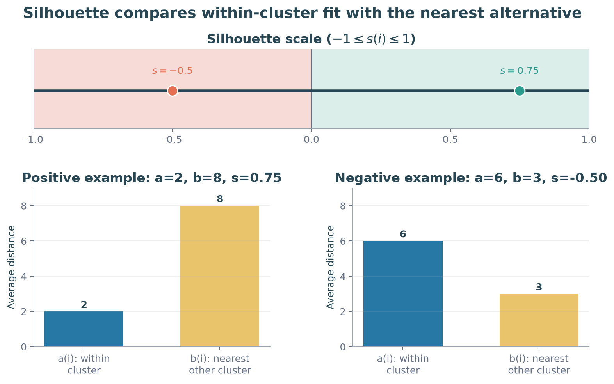
7.2 Formula ka short calculation
Question: A point has average within-cluster distance 2. Its average distances to the other two clusters are 8 and 10. Find its silhouette score.
Step 1: $a=2$. Other-cluster averages mein minimum $b=\min(8,10)=8$.
Step 2: $s=(8-2)/8=\boxed{0.75}$. Positive and high: point well matched hai.
Counterexample: $a=6,b=3$ ho toh $s=(3-6)/6=\boxed{-0.5}$. Negative score ka matlab exactly $-1$ nahi.
Q39 — Silhouette interpretation
Question:
For an unlabeled two-feature dataset, centroids $C_1$ and $C_2$ are obtained after K-Means iterations.
Which statement about the silhouette score $S$ is correct?
A. $S$ is positive and close to 0.
B. $S$ is positive and close to 1.
C. $S=-1$ exactly.
D. $S$ is negative but need not be exactly $-1$.
Solution:
Aug 2022 End Term.
Step 1: Negative silhouette tab aati hai jab relevant points ke liye own-group average $a$ alternative $b$ se bada ho. Dataset score individual values ka average hai.
Step 2: $a=6,b=3$ example se $-0.5$ milta hai: negative hone ke liye exactly $-1$ zaroori nahi.
Step 3: Existing notes answer D record karte hain, but figure/cluster data supplied PDF mein bhi missing hain. Given text alone se A/B/D decide nahi kar sakte; negative score establish karne ke liye distances chahiye. D ka interpretation valid hai, dataset-specific choice unverified hai.
7.3 WCSS aur silhouette ka difference
WCSS center se squared error measure karta hai: lower better, nonnegative. Silhouette own versus other clusters ke pairwise distances compare karti hai: higher generally better, negative bhi possible.
Low WCSS alone strong separation prove nahi karta; two compact groups bahut paas bhi ho sakte hain. $K$ select karte waqt scale, meaningful groups, elbow aur silhouette ko saath dekho.
8. Quick revision
| Task | Formula / check |
|---|---|
| Assign | Nearest center, $\arg\min_k\|x_i-\mu_k\|^2$ |
| Update | Coordinate-wise mean |
| Objective | Sum of squared distances to the specified centers |
| One Lloyd cycle | $J_C\leq J_B\leq J_A$ |
| New point update | $(m\mu+x)/(m+1)$, then recheck memberships |
| Geometry | Perpendicular bisectors; convex Voronoi cells |
| K-Means++ | First uniform; then nearest-selected-center $D^2$ weights |
| Ordered selection | First probability × conditional next probability |
| Manhattan | Sum of absolute coordinate differences |
| Silhouette | $(b-a)/\max(a,b)$; $b$ uses cluster-average distances |
Question solve karne se pehle four things circle karo: given centers ya assignments, distance metric, asked iteration/stage, tie convention. Final means nikalne ke baad assignment stability check karo. Initialization, final partition aur optimality teen separate ideas hain.